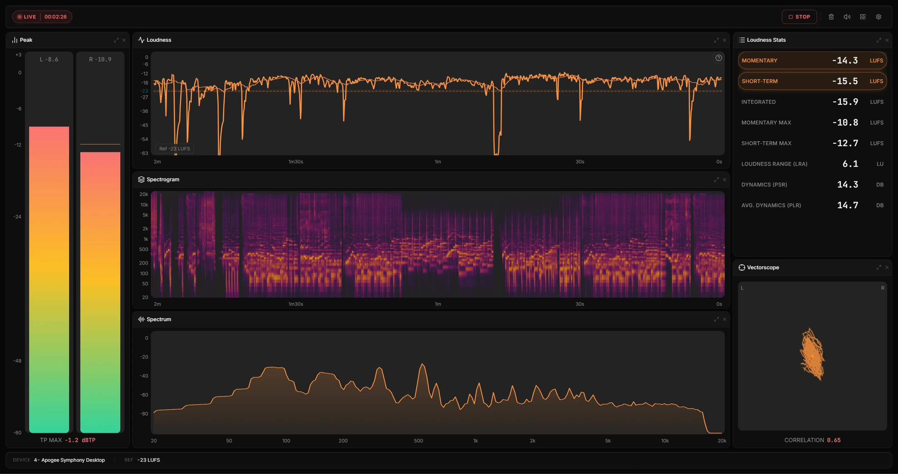
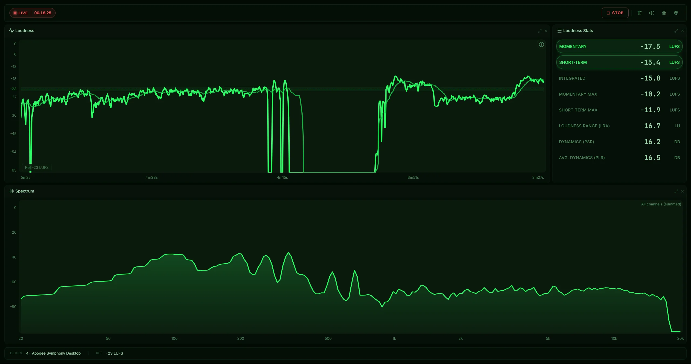
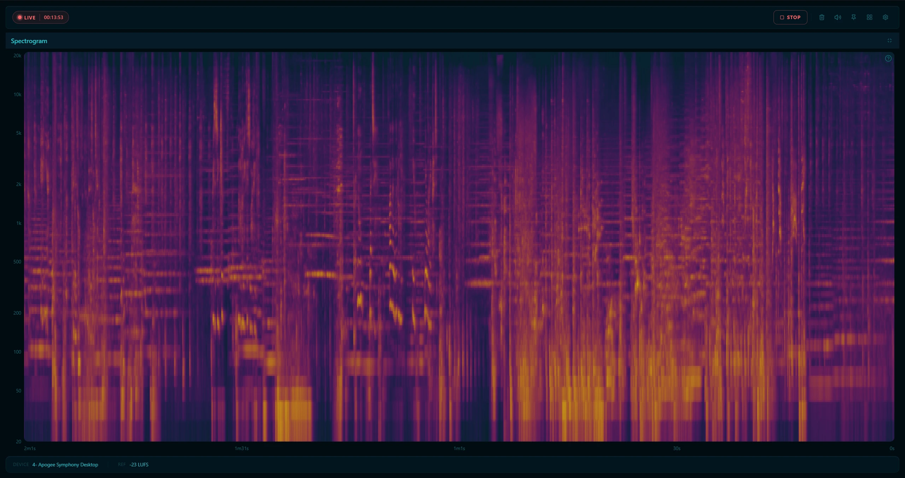
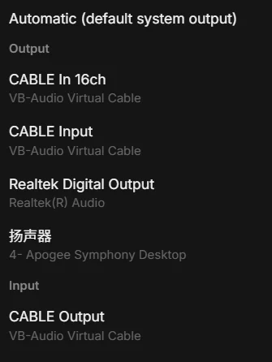
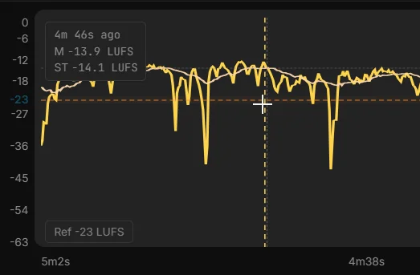
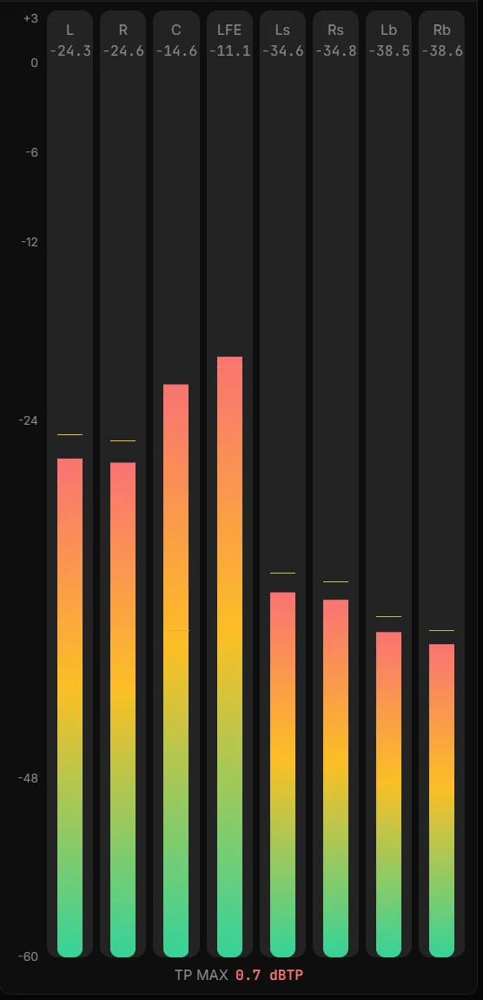
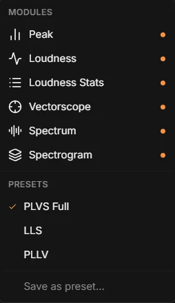

Peak·Loudness·Vectorscope·Spectrum·Spectrogram
Free, open-source real-time audio metering for Windows & macOS




Monitor any audio playing on your machine — no virtual audio cable required. Windows uses WASAPI loopback, macOS uses the native audio tap.

Scroll back through the loudness history timeline. Click any moment to freeze all meters at that snapshot — then return to live with one click.

Works with stereo and surround formats. Automatic channel layout detection with proper per-channel metering and ITU-R BS.1770 loudness for multichannel sources.

Drag any divider to resize panels and rearrange your workspace with split-tree layout. Switch between dark and light themes to match your environment.